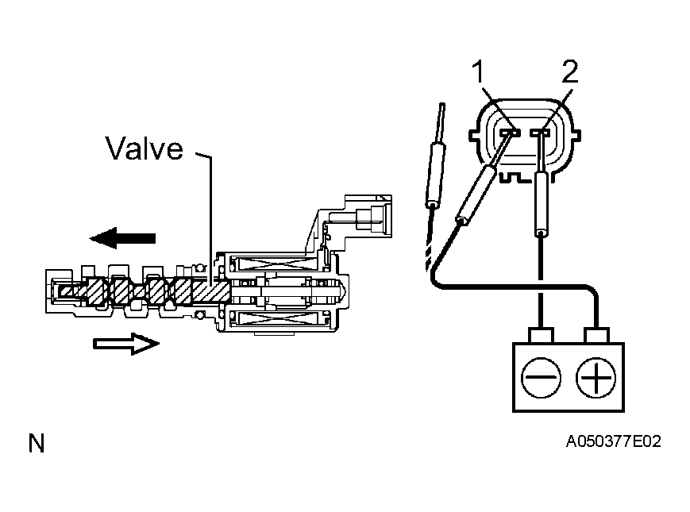

Camshaft Timing Oil Control Valve Assembly: Inspection
- INSPECT CAMSHAFT TIMING OIL CONTROL VALVE ASSEMBLY
- Measure the resistance of the oil control valve.
Standard resistance: 6.9 to 7.9 Ω at 20°C (68°F)
If the result is not as specified, replace the camshaft timing oil control valve assembly.
- Inspect the operation.
- Connect the battery positive (+) lead to terminal 1 and negative (-) lead to terminal 2, and inspect the movement of the valve.
Specified condition
TESTER CONNECTION - SPECIFIED CONDITIONSCondition Specified Condition Battery positive (+) voltage is applied Valve moves in left arrow direction shown in illustration Battery positive (+) voltage is cut off Valve moves in right arrow direction shown in illustration 
Courtesy of © TOYOTA, LICENSE AGREEMENT TMS1002If the result is not as specified, replace the camshaft timing oil control valve assembly.
NOTE: Confirm that the valve moves freely and is not stuck in any position.HINT:
Foreign objects in the oil can cause subtle pressure leaks in the valve. The pressure leaks will cause the cam to advance. This condition will usually set a DTC.
- Connect the battery positive (+) lead to terminal 1 and negative (-) lead to terminal 2, and inspect the movement of the valve.
- Measure the resistance of the oil control valve.